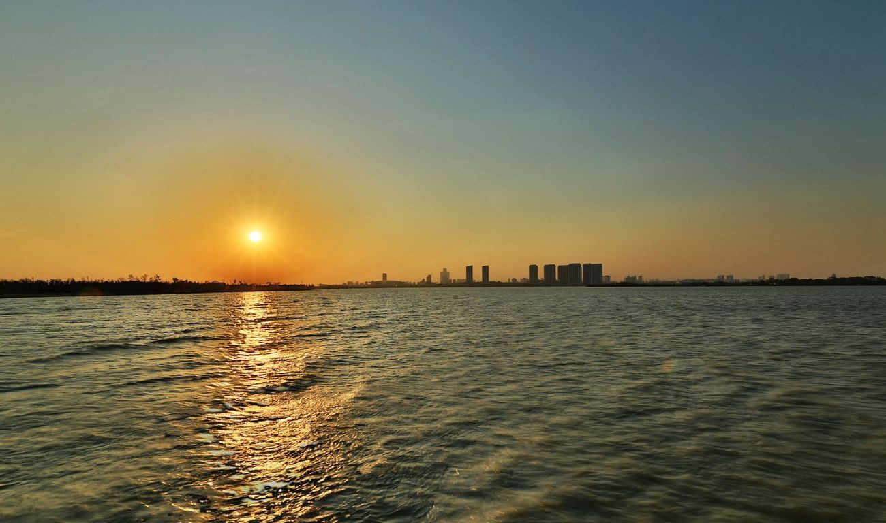
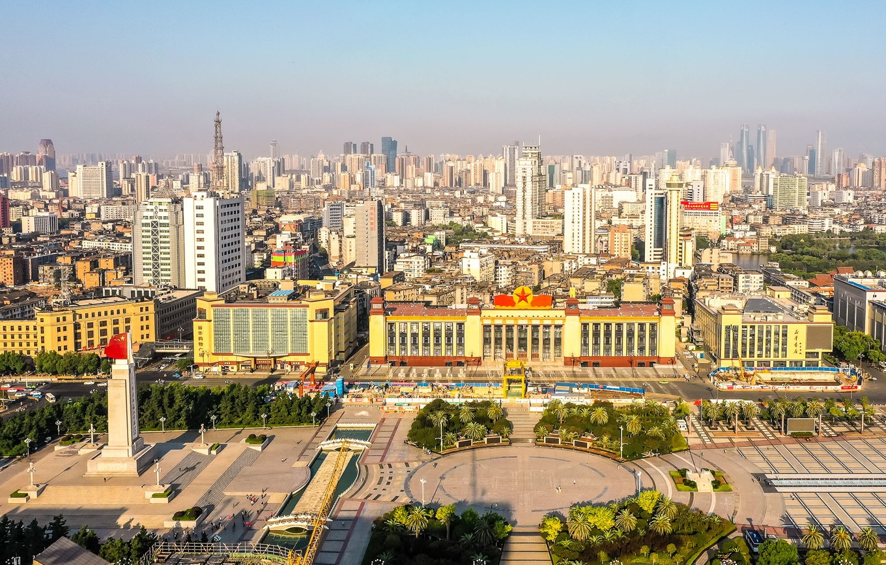
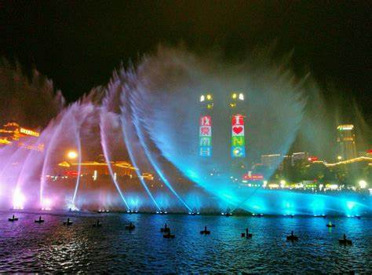
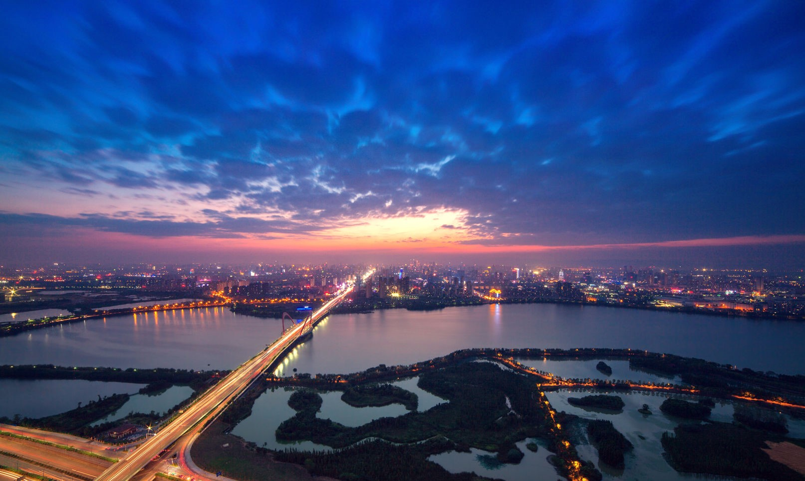

感受地铁魅力，演绎欢乐出行
你可以方便快捷的乘坐地铁，通过使用手机APP"鹭鹭行"
"鹭鹭行APP"
10月15日上午，南昌地铁“鹭鹭行”APP上线启动仪式在1号线秋水广场站举行，南昌地铁移动支付扫码过闸功能正式试运营。
使用须知：
你可以通过本站获取到美食信息，满足你的吃货欲望
通过本站你可以获得如何通过地铁路线，把南昌玩一个遍

瑶湖坐落于南昌市高新区，是南昌地区最大的内陆天然湖泊，现有水面15.25平方公里，是南昌地区最大的天然湖泊。与南昌市已开发的青山湖
，艾溪湖连成一线，昌万公路贯穿湖心而过，福银高速（G70）沿湖东侧而过。
瑶湖坐落于南昌市高新区，瑶湖湖面呈长方形，自南向北分为上瑶湖、中瑶湖、下瑶湖。湖盆平坦，湖面开阔，碧水盈盈，春
夏之际，荷花吐艳，经菱飘香游鱼嬉戏婀娜秀美；秋色之时，数以万计的珍奇候鸟遨游湖面，一片莺歌燕舞景象，美不胜收。
滕王阁，江南三大名楼之一，位于江西省南昌市西北部沿江路赣江东岸，始建于唐永徽四年（公元653年），因唐太宗李世民之弟——滕王李元婴始建而得
名，又因初唐诗人王勃诗句“落霞与孤鹜齐飞，秋水共长天一色”而流芳后世。
唐贞观十三年（公元639年），唐高祖李渊第二十二子、唐太宗李世民之弟李元婴被封于山东滕州，为滕王。他于滕州筑一阁楼名曰“滕王阁”（已被毁）。唐显庆四年（公元659年），
滕王李元婴调任江南洪州（今江西南昌）都督，因其思念故地滕州，修筑了著名的“滕王阁”。滕王阁因王勃的《滕王阁序》为后人熟知，成为永恒的经典。
滕王阁与湖北武汉黄鹤楼、湖南岳阳楼并称为“江南三大名楼”。历史上的滕王阁先后共重建达29次之多，屡毁屡建。
2018年10月29日，南昌滕王阁旅游区被文化和旅游部批准为国家AAAAA级旅游景区。
 八一广场 如今的八一广场，于八一南昌起义暨建军90周年时重新改造亮相，美轮美奂，又被人称为万人广场，开阔的空地上可容万人，平时早晨也会有很多喜欢放风筝 的老者，如果航拍，我比较建议在早晨8点以后，而且是限高区域（120米）。
 江西南昌，人杰地灵，南昌市秋水广场于2004年1月28日落成，位于南昌市红谷滩新区的赣江之滨，与名振天下的滕王阁隔江相望，依《滕王 阁序》中名句“落霞与孤鹜齐飞，秋水共长天一色”而命名，位于江西省南昌市红谷滩新区的赣江之滨，秋水广场东边是赣江，西边是南昌市委、市政府，南边是南昌大桥，北边是八一大桥，和秋水广场连在一起的是 赣江市民公园全亚洲最高最大的音乐喷泉群，南昌市秋水广场广场总体平面为月牙形，依江而立。江岸线长1100米，最宽处110米。世界第二超级音乐喷泉 南昌秋水广场拥有目前全国最大的音乐喷泉群。 音乐喷泉位于秋水 广场的中心地带，秋水广场的临江位置建有一个长280米、宽25米的大型江边悬挑平台。共配置了包括中心主喷、环形高喷、圆形摇摆喷泉和数控跑泉在内的共22个水景，水景长达800米，共装有636台水泵、1591个喷头，秋水 广场喷泉主喷为128米，秋水广场音乐喷泉为亚洲最大的音乐喷泉群，是国际化观光旅游的大型休闲广场。

艾溪湖湿地公园是江西省南昌市唯一的一块典型城市天然湿地，位于高新开发区艾溪湖东岸，占地2500余亩，于2007年9月开建。
洪城之东，有艾田数亩，葱郁茂盛，有溪穿田而过，土人谓之“艾溪”，溯流而上，有洼地数顷，水汇聚于此，渐成汪洋之势，曰:“艾溪湖”。登临高处，放眼望去，碧波荡漾，气象万千，俨然有洞庭之魂、鄱阳之势力，其美非言辞能达。
公园建成后,逐步与天香园候鸟公园连为一体,成为鄱阳湖候鸟通道。而艾溪湖4.5平方公里的水面也将与2500余亩土地一起将构成自然、立体的森林湿地体系，成为南昌继梅岭之后的又一个天然绿肺。
在我们网站你可以看到南昌地铁的”风采“
{kind=link}
{kind=link}
{kind=link}